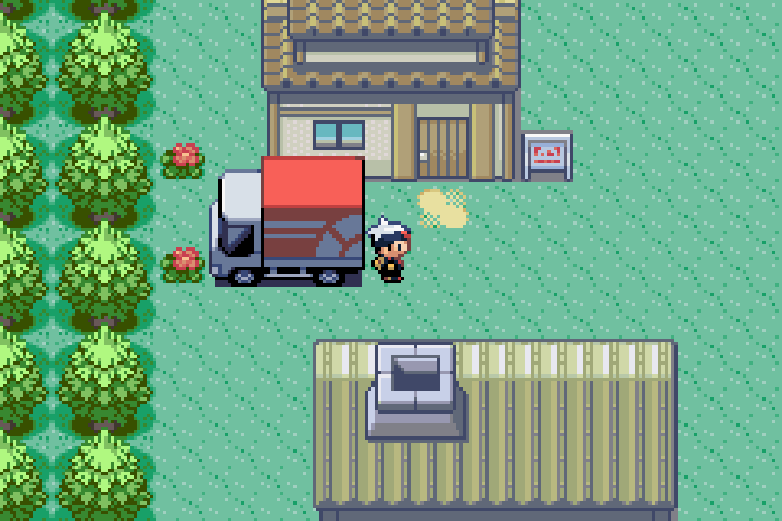
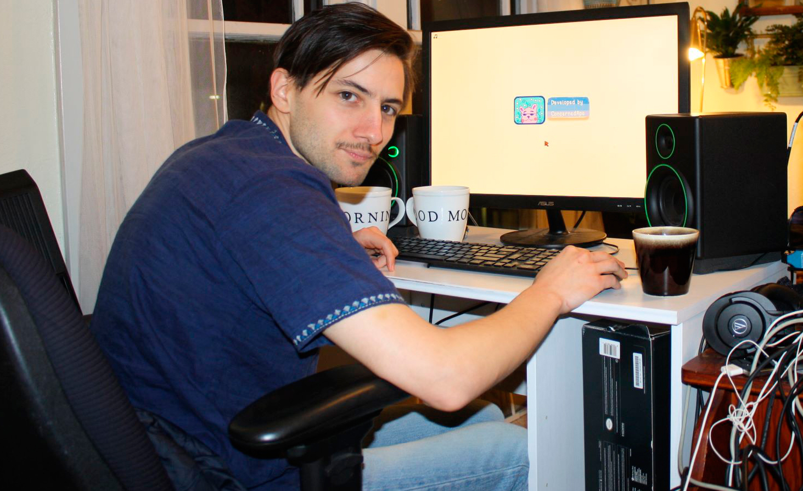

About Me
Activities
Hobbies
 Hobi saya adalah membaca dan bermain game, terutama game retro atau lawas.Hobi membaca saya didapat tidak lama setelah seorang teman mengusulkan sebuah buku untuk saya baca berjudul Kafka on The Shore yang ditulis oleh Haruki Murakami. Seorang penulis Jepang yang lahir pada tahun 12 Januari 1949. Hobi kedua saya adalah bermain game retro, game retro adalah game yang di publish pada tahun 90an. Saya sudah menyukai game retro sejak umur 10 tahun atau pada saat saya menduduki kelas 4 SD. Hal yang sangat saya sukai saat bermain game retro adalah kesan kembali ke masa lalu. Saya sangat menyukai Pixel Art, karena itulah saya jatuh cinta pada pandangan pertama kepada game lawas. Tidak hanya mendapat hiburan, game reto juga memberikan saya inspirasi untuk menjadi seorang game developer. Terutama Indie Game Developer Orang yang membuat saya sangat ingin terjun kedalam bidang developing adalah Eric Barone, pengembang sekaligus pembuat dari game populer berjudul Stardew Valley. Dia mengembangan game itu seorang diri. Code, Musik, Art, dan juga termasuk Story Line dari game itu.
School

Saya bersekolah di tempat yang indah dan pasti akan membuat saya sukses kedepannya.
Smk 2 Buduran
disana terdapat guru yang mengajari ilmu komputer, saya berada di
jurusan RPL(Rekayasa Perangkat Lunak)
SMK Negeri 2 Buduran berasal dari Sekolah Menengah Ekonomi Atas yang
sebelumnya merupakan peningkatan sekolah dari Sekolah Menengah Ekonomi
Pertama di Porong ditingkatkan menjadi Sekolah Menengah Ekonomi Atas
yang diterbitkan melalui Keputusan Menteri Pendidikan dan Kebudayaan
Republik Indonesia atas nama Sekretaris Jenderal T. Umar Ali Nomor :
017/0/1979 tanggal 29 Januari 1979. Bersama itu pula yang menjabat
sebagai Kepala Sekolah Menengah Ekonomi Atas yang pertama dijabat oleh
Bapak Drs. Heru Soejipto.
Dream
Sebenarnya saya tidak mempunyai cita-cita yang pasti, tetapi saya selalu ingin membuat lapangan pekerjaan untuk masyarakat Indonesia. Terutama di bidang teknologi dan informasi, karena saya selalu melihat kalau ada peluang di sana. Saya juga ingin menjadi seorang Game Developer. Seperti idola saya, saya ingin menjadi Indie Game Developer. Saya ingin mendesign semua hal dengan tangan saya sendiri.
Next 10 Year
Pertama-tama, saya akan fokus ke dalam bidang programming dahulu, setelah itu saya akan memilih kuliah di bidang programming dan 3D design. di sela-sela kuliah, saya akan membuat beberapa game kecil untuk mengisi waktu luang, dan juga mendapat uang untuk membantu orang tua membayar biaya kuliah. Setelah lulus kuliah, saya akan mencari pekerjaan yang sesuai dengan bidang saya. Tak hanya untuk mendapat uang, tetapi juga mengumpulkan pengalaman. Setelah mendapat banyak pengalaman, saya ingin membuat pekerjaan untuk saya sendiri, dan juga masyarakat Indonesia